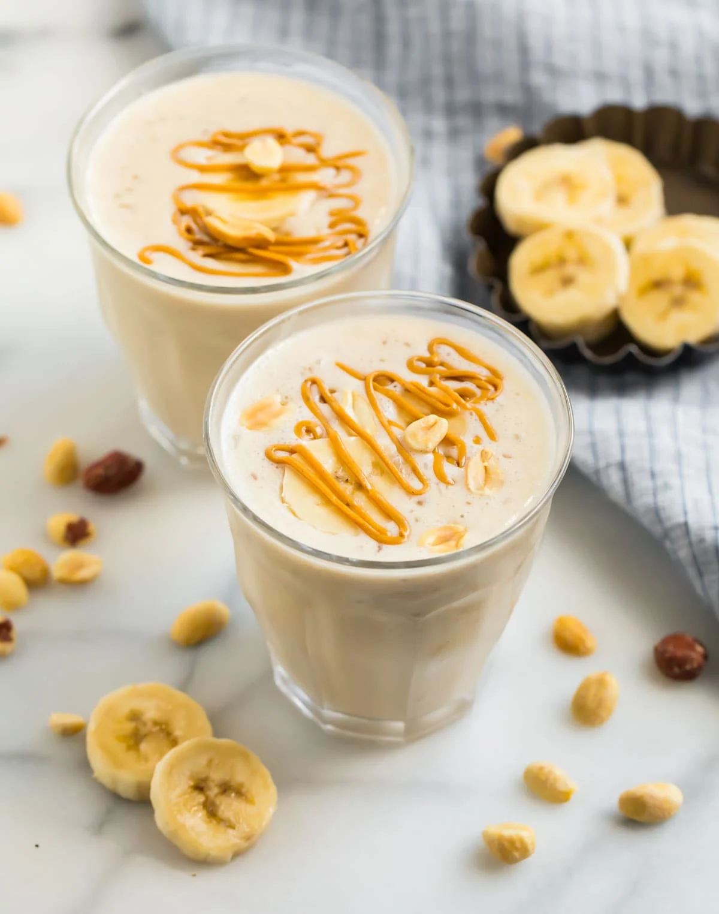

Peanut Butter Smoothie

Description
A peanut butter smoothie is a delicious and nutritious way to start your day. Typically made with ingredients such as frozen banana, almond milk, and honey, this smoothie is rich in protein, healthy fats, and fiber, making it a filling and energizing breakfast option. The frozen banana gives the smoothie a creamy texture, while the peanut butter provides a nutty and slightly sweet flavor.The almond milk creamy texture and helps to blend all the ingredients together smoothly. The honey provides a touch of sweetness and helps to balance out the flavors. Overall, a peanut butter smoothie is a tasty and convenient breakfast option that's perfect for busy mornings.
Ingredients
Serves: 1 smoothie (about 450mil without ice)
3/4 cup unsweetened almond milk
1 large banana cut into chunks and frozen
2 tablespoons creamy peanut butter
1/2 cup nonfat plain Greek yogurt
1/4 teaspoon ground cinnamon
Ice optional
Optional mix-ins: 1/2 scoop protein powder (vanilla or chocolate)
Method
Place all of the ingredients in a blender in the order listed: almond milk,
banana, peanut butter, Greek yogurt, cinnamon, and any extra mix-ins.
Blend until smooth. If you'd like the smoothie thicker, add a few ice cubes and blend again. Pour and enjoy!
Enjoy!